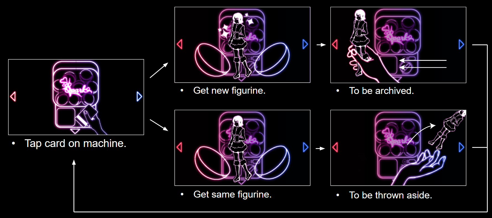

A 2D game concept critiquing the addictive gamification and commodity culture of modern dating apps.
Made with: Illustrator • Clip Studio Paint • After Effects • Premiere Pro
Overview
Spark is a speculative game concept that exposes how modern dating apps use predatory gambling mechanics to trap users in an endless loop. By drawing a direct parallel between physical toy capsule machines (gachapon) and the addictive cycle of online "swiping," the project strips away the illusion of romance. By replacing human connection with the pursuit of digital plastic figurines, Spark highlights how users are commodified, exploited, and trapped by the gambler's fallacy.
Gacha Core Loop
The experience is designed as a small, intentionally repetitive collecting game loop. In the center is a capsule machine interface, where players would theoretically spend the majority of their time seeking a dopamine hit through envisioned bright graphics, flashy animations, and casino-inspired audio cues.
The items inside the machine are figurines with dressed-up attire and distinct silhouettes. Hand-drawn with precise, clean lines, their attractive designs are structured to incentivize players to unlock them all, directly showing how dating app users are forced to commodify and upsell themselves to act as an incentive for others to keep playing.

Hidden Costs
The proposed game layout branches from the central machine into three directions, creating a conceptual ecosystem that mirrors the hidden costs of digital dating:
The Archive is a collection grid where users view unlocked figurines and read their backgrounds, emphasizing the cataloging of human beings.
The Bin is a discarded space to throw away "double-up" figurines, physically visualizing the careless manner in which online daters cast people aside.
The Wallet is a screen where players grab their bank card to invest funds back into the machine. The currency counter can drop deep into the negatives, tracking financial debt without interrupting the core gameplay flow.
While players would initially navigate between these screens, the layout assumes that the friction of switching views would eventually force them to optimize their time. They settle into a mindless loop, staying on the capsule machine screen to chase the next unlock, only occasionally checking the outer screens to survey their progress.

Trapped Without Closure
The core of Spark relies on a hidden truth: the game is completely rigged. To mirror the psychological trap of online dating, one final figurine in the archive is hardcoded to remain forever locked.
While the interface still flashes celebratory neon animations and casino sound effects, their actual standing is a negative wallet, a packed bin of rejected matches, and an incomplete archive. Instead of walking away, players are trapped by the gambler's fallacy, believing that their massive investment of time and money must eventually grant them closure. Spark ultimately reveals that these platforms aren't designed to find you the perfect match, but to keep you hooked.